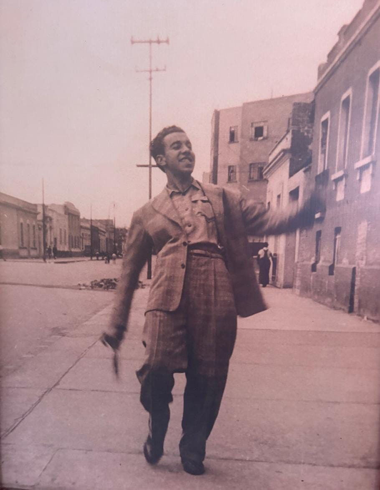

La Reforma
Comida chilanga en México Norte, Mérida. Sabor de la Ciudad de México, con cocina hecha al momento.
Comida chilanga en México Norte, Mérida. Sabor de la Ciudad de México, con cocina hecha al momento.
La Reforma se fundó en 1963 en la Ciudad de México, de la mano de Germán Gayoso. Desde entonces, es una cantina auténtica con sabor chilango.
En noviembre de 2016, Miguel Gayoso, hijo de Germán, trajo La Reforma a Mérida con La Reforma México Norte, para llevar esa misma comida chilanga a Yucatán.

Germán Gayoso, fundador de La Reforma.